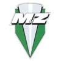
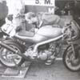
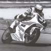
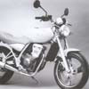
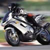
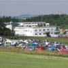

1989 |
Din cauza crizei financiare si introducerea marcii germane, 3 200 de muncitori stau cu frica in de a nu-si pierde locul de munca. |
||
1990 |
Se privatizeaza diferite firme printre care se afla si MZ, care se va numi in viitor MZ GmbH. Productia scade, foarte multi muncitori devin someri, deoarece se considera ca la un producator de motociclete trebuie sa lucreze doar 250 de oameni. Intre 1950 si 1990 sunt produse 2 545 112 motociclete MZ. |
||
1991 |
La data de 18 decembrie 1991 se inchide fabrica. |
||
1992 |
La data de 1 iulie, Petr-Karel-Korous infiinteaza fabrica de motoarea sub numele de MuZ. In toamna se prezinta o noua gama de modele, precum Silver Star Classic 500, Saxon Country, Saxon Voyager cu motorizari de la fabrica Rotax din Austria. |
 | |
1993 |
Fabrica era alcatuita din 250 de muncitori. Este prezentata mini-motocicleta electrica Charly si gama Skorpion. La inceputul lunii octombrie este premiera modelului sport Skorpion cu 67 de cai-putere. |
 | |
1994 |
Administratia se muta la Hohndorf. Este premiat pentru un bun plan de marketing, anume intr-un an si jumatate MZ a lansat pe piata produse cu viitor si a revenit pe piata mondiala. |
||
1995 |
Sfarsitul este aproape din nou. Se vand utilajele de finisare a motorului in doi timpi Turciei. |
||
1996 |
Concernul Malaesian Hong Leong preia MuZ. Incepand din anul 1993 MuZ participa la Supermoto Cup. In 1996 Elli Bindrum ajunge pe locul 3 in clasamentul final. Tot in 1996 pilotii de la MuZ ajung pe podium in cinci din cele noua curse. |
||
1997 |
Din nou doua locuri 1 pentru MuZ pe circuitul A1. Gama Skorpion se extinde cu modelul enduro Baghira si funbike-ul Mastiff, fiecare cu motor Yamaha de 660 cmc. Mini-motocicleta Moskito si MuZ 125 Sport Star extind programul de fabricare. Pentru prima data se desfasoara Cupa Skorpion, amatorii isi pot incepe o cariera in motociclism. |
 | |
1998 |
Prezentarea primului motor in patru timpi, cel de 125 cmc. MuZ intra in clasa rege a curselor de motociclism, Marele Premiu la clasa 500 cmc, cu ajutorul lui Swiss-Auto. |
 | |
1999 |
In octombrie pica litera “u” din MuZ. MZ IS BACK! |
||
2000 |
Primul model fabricat in totalitate de MZ, modelul MZ RT 125 este prezentata lumii. Hong Leong creste investitia initiala ca sa extinda gama de modele de 125 cmc. In toamna este prezentat prototipul MZ 1000 S. |
 | |
2001 |
In martie sunt prezentate modelele 125 SX si 125 SM, care cuceresc piata din est. In august se desfasoara prima intalnire oficiala MZ in incinta fabricii de la Zschopau-Hohndorf. |
 | |